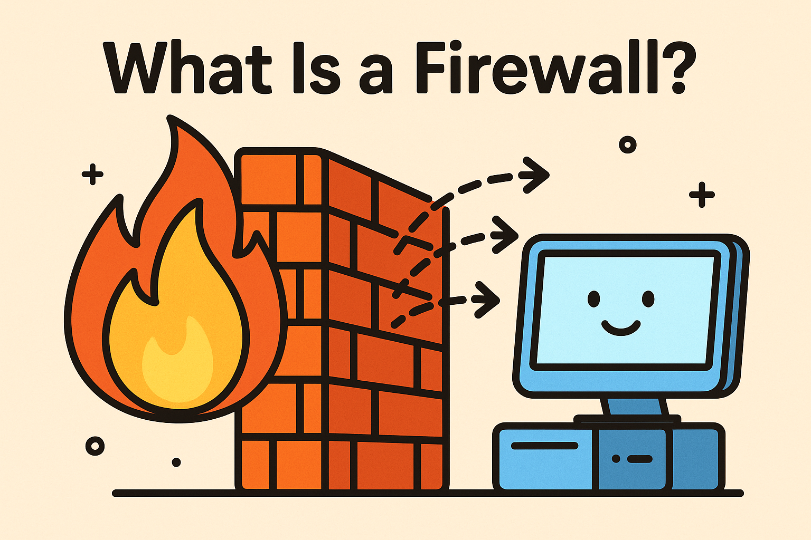

در این بخش آموزشی، مجموعهای جامع و عملیاتی از مطالب و راهنماییهای دقیق درباره امنیت شبکه، زیرساخت، فایروال و آگاهی سایبری ارائه شده است. هدف ما ارتقای سطح دانش فنی کاربران و آمادهسازی حرفهای افراد برای محیطهای کاری واقعی و پیچیده میباشد. با مطالعه این مطالب، شما میتوانید استراتژیهای پیشرفته امنیت شبکه را در سازمان خود پیادهسازی کنید و مشکلات عملی را حل نمایید.
امنسازی شبکه شامل مجموعهای از اقدامات فنی، مدیریتی و پروتکلی است که با هدف محافظت از دادهها، سیستمها و منابع حیاتی سازمان انجام میشود. این اقدامات شامل طراحی سیاستهای امنیتی، استفاده از رمزنگاری قدرتمند، مدیریت دسترسیها، و پیادهسازی سیاستهای امنیتی برای سرورها و تجهیزات شبکه است.
علاوه بر امنیت فنی، آموزش کاربران و ایجاد فرهنگ امنیتی، بخشی حیاتی از امنسازی شبکه است. کاربران آموزشدیده قادر خواهند بود حملات فیشینگ، بدافزارها و تهدیدات دیگر را شناسایی و به موقع گزارش کنند.
ابزارهایی مانند فایروال، سیستمهای IDS/IPS، مدیریت تهدیدات و پایش مداوم شبکه، ستونهای اصلی امنیت شبکه هستند. پیادهسازی درست این ابزارها، سازمان را در برابر حملات سایبری مقاوم میکند و امکان واکنش سریع به رخدادها را فراهم مینماید.
امنسازی شبکه یک فرآیند مستمر و پویا است؛ بهروزرسانی سیستمها، بازبینی سیاستها و آموزش منظم کاربران برای مقابله با تهدیدات جدید ضروری است.
معماری شبکه، طراحی و ساختار کلی شبکه سازمان را مشخص میکند و شامل توپولوژی، تقسیمبندی VLAN، طراحی مدلهای لایهای و انتخاب تجهیزات استاندارد است. این طراحی باعث افزایش کارایی، امنیت و مقیاسپذیری شبکه میشود.
انتخاب پروتکلها، نقاط دسترسی و مسیرهای ارتباطی، به همراه مدیریت پهنای باند و برنامهریزی ظرفیت، از نکات کلیدی معماری شبکه هستند که به عملکرد بهینه شبکه کمک میکنند.
معماری شبکه بهینه باعث کاهش هزینههای نگهداری و مدیریت آسانتر شبکه میشود و به سازمان اجازه میدهد تغییرات و توسعههای آینده را بدون اختلال انجام دهد.
مستندسازی دقیق، نظارت بر عملکرد و بازبینی منظم معماری، ابزارهای مهم برای پایداری و امنیت بلندمدت شبکه هستند.

فایروال اولین خط دفاعی در شبکه است و پیکربندی صحیح آن میتواند امنیت سازمان را بهطور چشمگیری افزایش دهد. قوانین دسترسی دقیق، فیلتر کردن ترافیک مشکوک و ایجاد سیاستهای امنیتی قوی، بخش مهم این فرآیند است.
فایروال باید بهطور مداوم مانیتور شود و قوانین آن بر اساس تحلیل تهدیدات بروزرسانی شود. بررسی گزارشها و شناسایی رفتارهای غیرعادی، کمک میکند حملات را قبل از آسیب جدی متوقف کنیم.
ترکیب فایروال با سیستمهای IDS/IPS، VPN و راهکارهای امنیتی پیشرفته، یک شبکه امن و مقاوم در برابر حملات سایبری ایجاد میکند.
آموزش کارکنان در استفاده درست از منابع و پایش مداوم فایروال، امنیت شبکه را به سطح حرفهای و قابل اعتماد میرساند.
آموزش و آگاهی سایبری، ستون اصلی امنیت شبکه است. بدون کاربران آموزش دیده و آگاه، تمامی ابزارهای فنی به تنهایی کافی نیستند. کارکنان باید توانایی شناسایی ایمیلهای فیشینگ، حملات اجتماعی و تهدیدات ناشناخته را داشته باشند.
ایجاد فرهنگ امنیتی در سازمان، به کارکنان یاد میدهد چگونه از دادهها و اطلاعات حساس محافظت کنند و تصمیمات آگاهانه بگیرند. این فرآیند باعث کاهش خطاهای انسانی و جلوگیری از نفوذ مهاجمین میشود.
آموزش مداوم، تمرینهای شبیهسازی حمله، بررسی سناریوهای مختلف و ارزیابی ریسک، سازمان را برای مقابله با تهدیدات سایبری آماده میسازد.
کارکنان آموزش دیده نقش فعال در امنیت دارند و با پایش، گزارشدهی و رعایت سیاستهای داخلی، امنیت پایدار و مستمری برای سازمان فراهم میکنند.